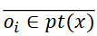
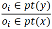
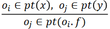
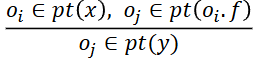
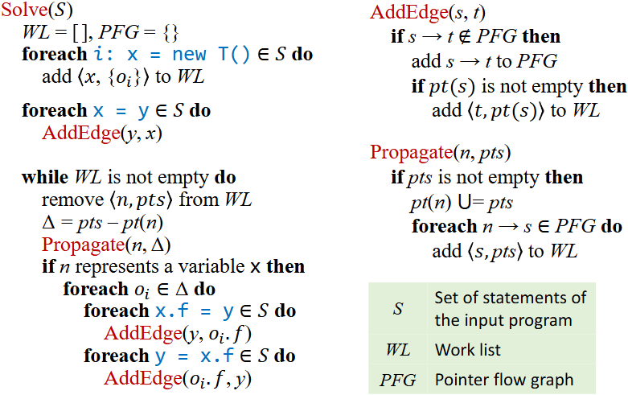
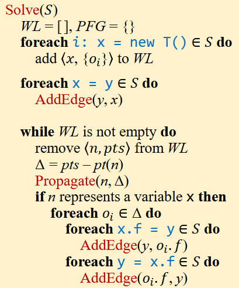
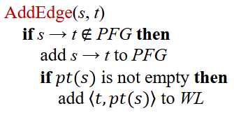
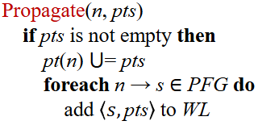
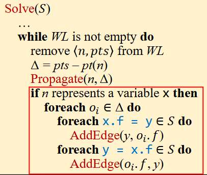

Pointer Analysis: Rules
Domains and Notations（域和符号）
| Variables: | x, y ∈ V |
| Fields: | f, g ∈ F |
| Objects: | oi, oj ∈ O |
| Instance fields: | oi.f, oj.g ∈ O × F |
| Pointers: | Pointer = V ⋃ (O × F) |
| Points-to relations: | pt : Pointer → 𝒫𝒫(O) |
- P(O) denotes the powerset of O（P(O)表示 O 的幂集）
- pt(p) denotes the points-to set of （pt(p) 表示 p 的指向的集合）
How to Implement Pointer Analysis
| Kind | Statement | Rule |
|---|---|---|
| New | i: x = new T() |  |
| Assign | x = y |  |
| Store | x.f = y |  |
| Load | y = x.f |  |
本质上，指针分析是在指针（变量和字段）之间传播指向信息。我们使用一个 graph 来连接相关指针，当 pt(x) 发生变化时，传播更改的部分到 x 的后继。
Pointer Flow Graph (PFG)
程序的指针流图是一个有向图，它表示对象如何在程序中的指针之间流动。由 Nodes 和 Edges组成：
-
Nodes: Pointer = V ⋃ (O × F)
一个节点 n 表示一个抽象对象的一个变量或字段
-
Edges: Pointer × Pointer
一条边 x → y 表示指针 x 指向的对象可以流向指针 y （也被指针 y 指向）
| Kind | Statement | Rule | PFG Edge |
|---|---|---|---|
| New | i: x = new T() | N/A | |
| Assign | x = y | 𝑥 ← 𝑦 | |
| Store | x.f = y | 𝑜𝑖.𝑓 ← 𝑦 | |
| Load | y = x.f | 𝑦 ← 𝑜𝑖.𝑓 |
使用 PFG，可以通过计算 PFG 的传递闭合来解决指针分析。
- 构建指针流图 （PFG）
- 在 PFG 上传播指针指向的信息
但是这两者是相互依赖的，PFG 是在指针分析期间动态生成的。
Pointer Analysis: Algorithms
首先是这个算法的整体表示：
左侧的 Solve(S) 是主要的算法，右侧是对应的一些封装的函数逻辑。
其中在 WorkList(WL) 中，我们要知道：
- Worklist 包含的要处理的 points-to 信息主要是 WL ⊆ <Pointer, 𝒫(O)>∗ 这样的 pair 。
- 每个 WL 条目 <n,pts>是一对指针 n 和指向集合 pts 的字符，这意味着 pts 内的所有对象应该传播到 pt(n) ，
主要算法：
算法的一开始是初始化的过程，从这个过程也能看出这个算法是 Flow-insensitive ，首先处理 New 语句，一次性对输入程序中所有语句中的 New 语句执行对应的操作，将每一个 <x,{oi}> 加入WL。
然后来处理 Assign 语句，这里会对 x ，y 执行 AddEdge 函数，具体操作如下：
如果 s → t 已经在 PFG 里面了，就什么都不做；但如果不在，就将 s → t 加入到PFG里。并且如果 pt(s) 不为空，还将 <t,pt(s)> 加入到WL，这也就是将 s 的指向传递给 t ，确保 s 指向的每一个对象也被 t 所指向。
在这之后便开始 WL 的迭代，直到 WL 为空时我们则认为完成了全部的指针分析。我们每次从 WL 中取出一个工作的条目，计算 Δ = pts - pt(n) ，并将 Δ 传递给 n ，做 Δ 的计算是为了采用差分传播来避免传播和处理冗余的点对信息，也就是说 n 本身已有的 points-to 信息不需要再被传播。此外， Δ 对于处理store、load 和方法调用时的效率也很重要，稍后将解释。
然后来看具体的传播过程：
如果 pts 不为空，则将 pt(n) 直接加上 pts 的内容，并且对于当前 PFG 中每一个被 n 所指向的 s ，将新加入的 pts 的部分也传播到 s 上，也就是由于 s 是 n 的后继，所以要将 n 的指向信息变化同步传播给 n 的所有后继。
然后是较难的 Store 和 Load 的处理：
新的指向信息可能会引入新的 PFG 边，如果 n 代表一个变量拥有字段 f ，那么对于 Δ 中的每一个 oi ，对应的将 oi.f 传递给 y ， 或者将 y 传递给 oi.f 。